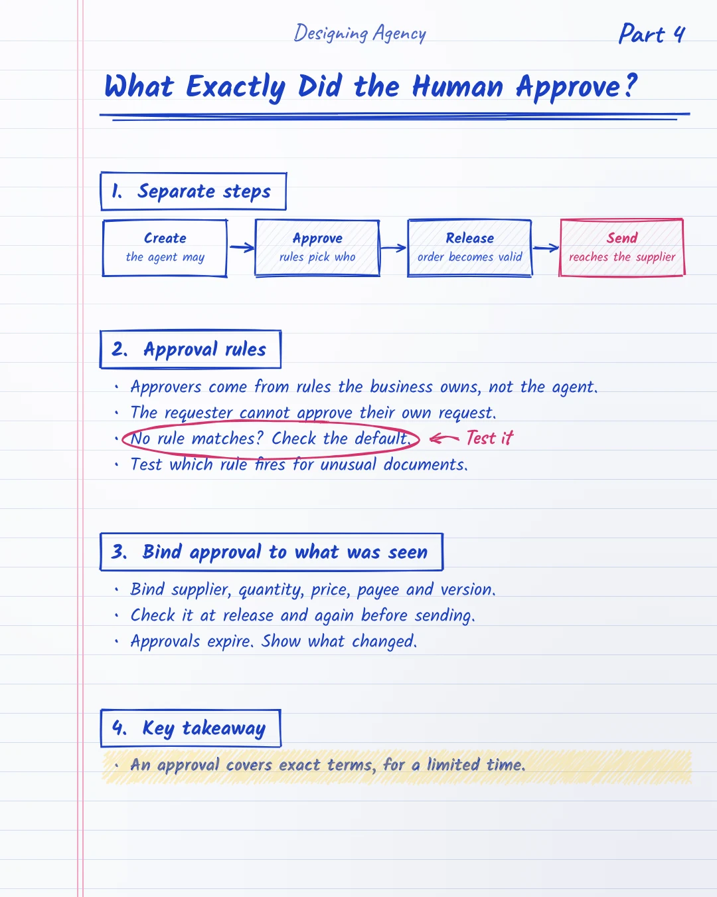

Blog / AI agents and governance / Designing Agency
What exactly did the human approve?
An approval is only meaningful if it is tied to the terms that were seen
The agent drafts an order for 4,000 cartons at 2.10 each from North Packaging. The buyer's manager approves it in the morning. By the afternoon the supplier has revised the price to 2.35, and the agent, trying to be helpful, updates the draft. Is the order still approved?
The honest answer is: it depends on how the system is configured, and most people asked would not know. That gap is where agents create risk, because they change things faster and more often than people do.
Create, approve, release, send
In most purchasing systems these are separate steps, and an agent design should keep them separate. Creating a purchase order records an intention. Approving and releasing makes it valid. Sending delivers it to the supplier. An agent that may create should not, by that fact alone, be able to release or send.
The same separation exists elsewhere. A finance agent may prepare a payment proposal; releasing the payment is a different act. A customer-service agent may draft a refund; issuing it is a different act. An operations agent may raise a change request; executing it in production is a different act.
Who approves is decided by rules the business owns
Approvers are usually derived from things the organisation already knows: the requester's manager, the person responsible for the budget or project, a value threshold, a team that owns a category. That is exactly where approver choice belongs: in rules the business owns and audits, not in anything the agent can influence.
Four questions matter more once agents are involved, whatever approval system is used:
- What happens when no rule matches? Approval rules often have a default. If the default is permissive, an agent that drafts documents shaped slightly differently from usual can fall through to it without anyone noticing.
- Which rule actually fires? Test representative documents, including the agent's unusual ones, and confirm which approval path each takes before trusting it.
- Can the requester approve their own request? Most approval systems can exclude the creator. Combined with Part 3, the creator should be the person who asked, not the agent's account.
- Where can approval move? Forwarding, substitutes and delegation of approval are useful for people. At agent volumes, they are worth monitoring.
Bind the approval to what was seen
The property to hold is: an approval covers the specific action and conditions that were approved, and nothing else. Whether a change after approval sends a document back for reapproval often depends on configuration, and that behaviour can change between versions and settings. Rather than rely on it, an agent design can make the binding explicit.
One way is a fingerprint. When approval is requested, record a fingerprint of the material terms: supplier, material, quantity, price, currency, delivery date, payment terms and the document version. At release and again before sending, compute the fingerprint of the document as it now stands. If they differ, the approval no longer covers it: route it back with a clear statement of what changed. Other mechanisms can provide the same property: version numbers checked at execution, signed approval records, or reapproval rules in the approval system itself. Whichever is used, an approval should also expire: one granted a month ago for a fast-moving price should not cover today's order.
Finance shows why this matters. A payment approved to a supplier's bank account is a different payment if the account details change afterwards, and changed bank details are a long-standing route for payment fraud. An approval bound to the payee's details, checked at execution, closes that route; an approval bound only to an invoice number does not.
The check itself should not be something a model can be talked out of. Uchi Uchibeke describes pre-action authorisation: intercepting each tool call synchronously before it executes, evaluating it against a declarative policy, returning allow, deny or escalate, and writing a signed audit record. Its default is to fail closed: if the authorisation service is unavailable, the call is denied. In a live adversarial test, social engineering succeeded against a model 74.6% of the time under a permissive policy, while a comparable population of attackers achieved 0% across 879 attempts under a restrictive one; decisions took a median of 53 milliseconds.1 That is one mechanism. The property is that the check runs outside the model's reasoning, wherever it is placed.
The rubber stamp
None of this helps if the approver approves everything. The AI Safety Atlas describes overreliance: people trusting AI systems beyond their actual capabilities.2 An approver shown a polished summary from an agent is exactly the person at risk.
Design the approval to resist it. Show what changed against the last approved version and against the quotes, which sources the agent used, and whether the action can be restored, compensated or only lived with (Part 2). Safin and Balta's test for a checkpoint is useful here: is review at this step warranted unconditionally, regardless of output quality?3 For release and sending, yes. For drafts, use escalation on low confidence instead, so reviewers see fewer and better cases.
The same applies in sales. A discount approved at 8% does not cover the 12% the agent agreed after the customer pushed back.
Notes

Sources
- Uchi Uchibeke, Before the Tool Call: Deterministic Pre-Action Authorization for Autonomous AI Agents, arXiv preprint, March 2026.
- Markov Grey and Charbel-Raphaël Segerie, AI Safety Atlas, Risks chapter.
- Damir Safin and Dian Balta, Autonomy and Agency in Agentic AI, arXiv preprint, May 2026.